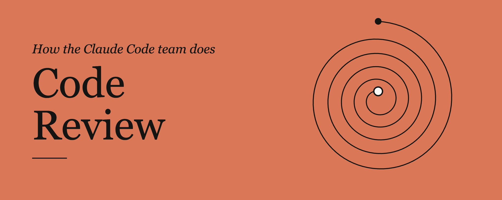
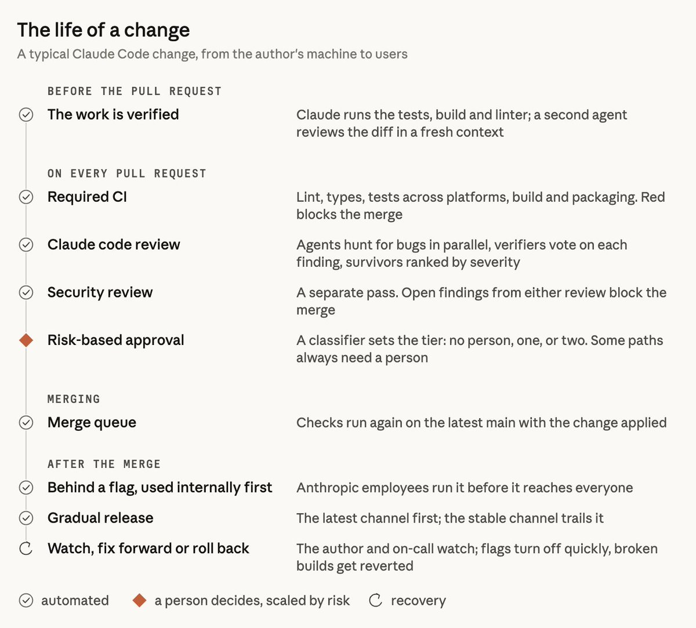
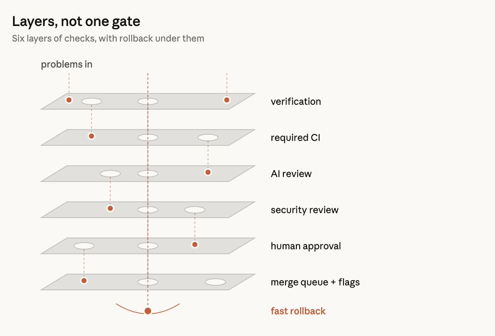
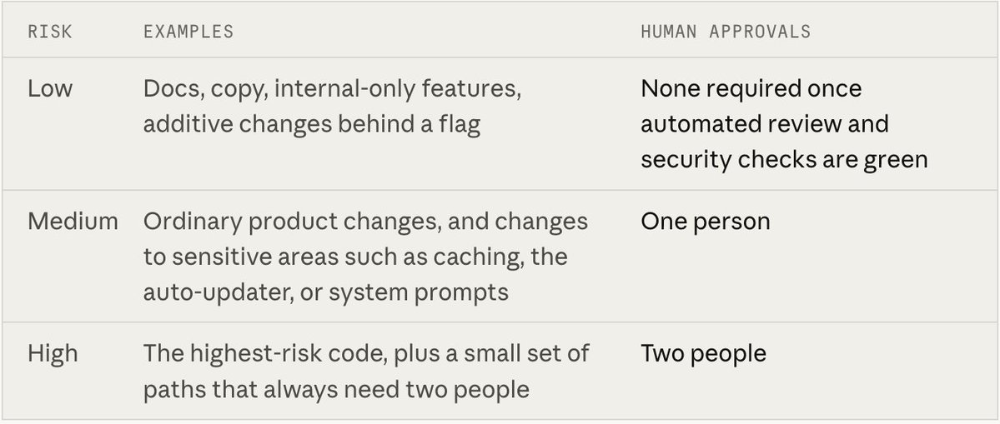
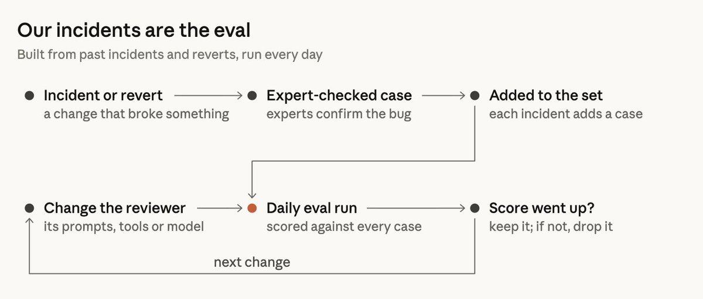
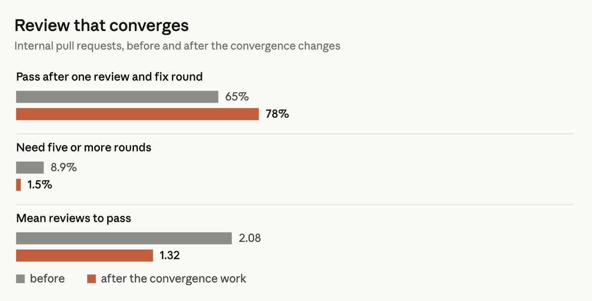
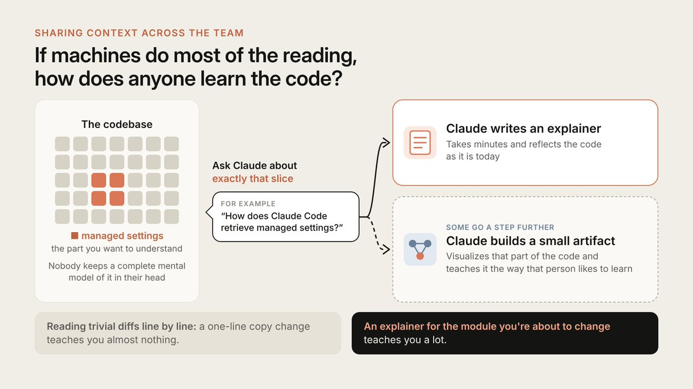

Claude Code 团队怎么做代码审查
How the Claude Code team does code review
- 分类
- AI
- 来源
- X · @addyosmani
- 原文
- 整理
- 作者
- Addy Osmani / @addyosmani（Claude Code @ Anthropic）
- 原文链接
- X 长文 · claude.dev 原始版
核心观点 / Highlights
译者补充，不是原文。
- 问题换了：不再问「有没有人读过这段代码」，而是问「这个改动可能出什么错、哪道检查（自动或人工）最适合抓住它」。6 月到 9 月，合并进 Claude Code 的 PR 数量翻了一倍多，需要回滚的 PR 占比反而下降了 40% 以上。
- 多层检查，而不是一道闸：提 PR 前的验证 → 每个 PR 的 AI 审查 → 可阻断的安全审查 → 阻断式 CI → 按风险分级的人工批准 → 合并队列 / feature flag / 分阶段发布，最底下兜着快速回滚。
- 风险看改动，不看作者：由分类器定级（无需人 / 一人 / 两人）；agent 的批准不算人工批准；agent 写的 PR，操作 agent 的人一定算一位必需审查者；出现不可信的新提交就得重新批准。
- 用事故当评测集，审查必须收敛：限制轮次、初轮后只审新 diff、按 bug 类别报告、不重复报旧问题——一轮审查加修复即通过的比例从 65% 升到 78%，平均通过所需审查轮次从 2.08 降到 1.32。
- 人的注意力留给机器替代不了的事：该不该做、危险代码、架构、核验证据、为改动担责。想了解代码，就让 Claude 为那一小块生成讲解，而不是逐行读琐碎的 diff。

开篇
我们之前提到过，Claude Code 大约 90% 的代码是 Claude 写的。那么在这种规模下，我们怎么做代码审查？到底还有谁在读代码？代码出了问题又怎么办？
这篇文章介绍我们 Claude Code 团队的代码审查流程，以及我们是怎么改进它的。从 6 月到 9 月，合并进 Claude Code 代码库的 pull request 数量翻了一倍多，而必须回滚（revert）的 pull request 所占比例下降了 40% 以上。
我们并没有停止做代码审查。相反，我们把大部分「阅读」自动化了，并调校它，让它为人的时间和精力做优化。我们还在提升「回滚错误」的速度和便利性上做了大量投入。
重新想清楚代码审查的目标
当 agent 开始写代码，改动的数量会迅速增长。在我们的 monorepo 里，每天合并的改动从 5 月的大约 2,500 个，涨到了今年 9 月的超过 30,000 个。
Claude Code 虽然不在我们的 monorepo 里，但它承受的压力同样很大。当你以这样的速度前进时，手工逐行做代码审查会变得越来越难，甚至根本不可能。
代码审查有两个目的：
- 在上线前发现并纠正 bug
- 对代码库形成共同的理解
本文主要讲第一个目标，第二个目标会在文末讨论。
在我们看来，「有没有人读过这段代码？」只是一个不精确的替代指标，它真正想衡量的是：「这个改动可能出什么错？哪一道检查——自动的或人工的——才是抓住它的正确手段？」
这个问题也改变了代码审查发生的时间点。传统上，代码审查是一种事后检查：代码写完了，PR 提了，然后有人等着另一个人来看一眼。而我们把代码审查融进了工作流本身，它更像是你边写边持续进行的拼写检查。
大部分改动在被交给人看之前，已经被 Claude 审查并修正过至少一次。这样，我们能抓住大部分常规 bug，把人的注意力留给更高层面的考量。
人的时间与注意力
我们希望把人的时间和注意力留给只有人才能处理的事情，同时确保有足够的自动化覆盖其余部分。即便按我们现在的节奏，仍然有大量工作需要人来做，而我们团队几乎每天都在遇到新的、前所未有的挑战。
因此，人的时间是一种「双边成本」。我们不仅计算人们花在代码审查上的时间，也计算他们花在修复烂代码引入的 bug 上的时间。如果只减少了前者而没有减少后者，我们其实并没有节省人的时间。
所以，我们的目标是：在 Claude Code 的各个仓库里（CLI、桌面端和 Web 应用、移动应用），大多数 pull request 在合并时，环里最多只有一个人（这个人可以就是作者本人），而且回滚和事故不增加。
我们用这些指标来跟踪人的时间：每个 PR 的人工批准次数中位数（以及第 95 百分位）、人工评论数，以及一个 PR 等人的时长。我们把回滚率和事故率当作护栏：如果这些指标上升，说明我们并没有减少人的时间，只是把它挪到了别处。
一次改动的旅程是怎样的？
一个典型的改动，无论来自工程师的笔记本电脑，还是来自 Slack 里的一个 Claude 会话，都会经过多层审查。
一次改动的一生
一个典型的 Claude Code 改动，从作者的机器到用户手里
- 提 PR 之前
- 工作已被验证Claude 跑测试、构建和 linter；另一个 agent 在全新上下文里审查 diff
- 每一个 PR 上
- 必过的 CIlint、类型检查、跨平台测试、构建与打包。红了就阻断合并
- Claude 代码审查多个 agent 并行找 bug，验证者对每条发现投票，留下来的按严重程度排序
- 安全审查单独的一遍审查。任一审查有未关闭的发现，都会阻断合并
- 按风险批准由分类器定级：不需要人、一个人或两个人。某些路径总是需要一个人
- 合并
- 合并队列在应用了该改动的最新 main 上再跑一遍检查
- 合并之后
- 放在 flag 后面，内部先用Anthropic 员工先跑起来，再推给所有人
- 逐步发布先到 latest 渠道，stable 渠道随后跟进
- 盯着看，向前修或回滚作者和 on-call 盯着；flag 能很快关掉，坏掉的构建会被回滚
自动化由人决定，按风险缩放恢复
查看原文英文图

上图是一个典型的 Claude Code 改动从作者环境到生产环境的过程。这个过程大部分是自动化的，人的注意力集中在有风险的那部分。
我们有六层检查，外加一个回滚机制，用来处理漏过去的问题。
多层检查，而不是一道闸
六层检查，下面还垫着回滚
问题从这里进来 ↓
查看原文英文图

每一层都会抓住一些 bug，也会漏掉另一些。能穿过所有层的 bug 很少；即便真有漏过去的，我们也有回滚机制。
1. 提 PR 之前的验证
我们的大部分审查发生在创建 PR 之前。我们会要求 Claude 做一些可运行的事情，比如跑测试、跑构建，或者把截图和设计稿做比对。我们不让它只说「任务完成了」，而是让它把结果展示给我们看。然后，由一个子 agent 在全新上下文里审查 diff。这两种做法都写在我们的最佳实践指南里。
在开 PR 之前，我们很多人还会跑几个内部 skill——找 bug、缩减 diff、端到端验证，以及按我们的设计规范检查 UI 改动。
按 Claude Code 的创造者 Boris Cherny 的说法，给 Claude 配上一套验证流程，大概是获得更高质量结果的最大关键。
他估计，一套验证流程能把 Claude 输出的质量提升到原来的两到三倍。
不同领域的验证流程可能差别很大：
有时简单到只是跑一条 bash 命令；有时是跑一整套测试；有时是在浏览器或手机模拟器里测试应用。
如果自动审查器反复指出同一个问题，我们就从源头修掉它——通过 skill 本身、一条 lint 规则，或者更新这样的文档文件：
CLAUDE.md——项目说明文件，你可以用它给 Claude 提供项目的上下文（技术栈、约定、目标、非目标）。Claude Code 每一次审查都会读入这个文件，所以对大型代码库我们会保持它简短，把其余文档放在这里引用。当代码违反了这个文件里的约定，或者某次更新让其中某些内容过时了，审查器就会指出来。
REVIEW.md——代码 owner 在这个文件里告诉审查器：在他们负责的那部分代码里什么最重要。我们会单独验证审查器是否真的遵循了这些准则。好的 REVIEW.md 都很简短，重点在于：
- 定义什么算项目失败（文档不能说谎；配置不能把请求路由错）
- 限制吹毛求疵
- 定义要忽略的路径
- 要求给出文件 + 行号引用，而不是去猜文件名
- 要求一份顶层摘要，包含问题数量，并在没问题时明确写出「no issues」
2. 每个 pull request 都有 AI 审查
每个 PR 在人工审查之前都会先经过一次 Claude 审查。
审查会把 diff 放在整个代码库以及 PR 作者陈述的意图下进行分析，检查：
- 这个改动是否真的解决了问题
- 这个改动是否与更大的系统相契合
- 这个改动是否不会弄坏代码库的其他部分
在审查 bug 修复时，这个 bot 会尝试找到根因。
我们面向公众的产品 Code Review for Claude Code 现已向所有 Team 和 Enterprise 客户开放。另外还有一个本地使用的轻量版本——/code-review。
自从我们发布研究预览版以来，内部 PR 中收到实质性审查意见的比例从 16% 升到了 54%。对超过 1,000 行的 PR，Code Review 在大多数情况下都能发现问题；对较小的 PR，大多数返回的是干净结果。管理员可以把仓库配置为 Quick、Standard 或 Deep 模式。当漏掉一个 bug 的代价高于审查代码所花的时间时，Deep 就很有用。
在交给人审查之前，每条发现都要经过其他多个 agent 的把关：
- 多个 agent 并行找 bug
- 由一次单独的投票判断某条发现是有效还是误报，只有票数足够的发现才会被确认
- 只涉及风格 / 诊断 / 清理的发现会被过滤掉（这些过滤器在推出之前，我们先在自己的 PR 上做过 A/B 测试）
剩下的发现会以行内评论的形式呈现，按严重程度排序，并标记为：
- Important（重要）
- Nit（小问题）
- Pre-existing（原本就存在；这样就不会因为不是这个 PR 引入的 bug 而不公平地责怪作者）
所有发现都必须处理——要么修掉，要么写明理由后把讨论串标记为已解决。很多情况下，agent 会在夜里把问题修好，作者第二天回来时，PR 已经又过了一轮审查。
3. 能阻断合并的安全审查
我们还会跑一次自动化安全审查。只要还有未关闭的发现（无论来自代码审查还是安全审查），任何 PR 都不能合并。作者可以修复问题，也可以用一句简短的理由关闭讨论串（这就是我们处理误报的方式）。
如果后续某个提交解决了问题，对应的发现会被自动关闭。你也可以用开源的安全审查 GitHub Action，或者 /security-review 命令，搭出同样的机制。具体做法见 Claude Code 自动化安全审查的指南。
4. 能阻断合并的自动化检查
标准检查：lint、类型检查、全平台测试、构建。（我们写过一篇文章讲我们如何扩展 CI。）一个典型的 CLI PR，在有人看它之前就可能已经跑了几十项检查。PR 模板里有几个问题：这个改动是怎么测试的、怎么回滚。Claude 可以替你回答这些问题，但作者有责任审核这些回答。
5. 按风险缩放的人工批准
有些改动比另一些风险更高（比如修一处文档 vs. 改自动更新器），所以需要不同级别的审查。
| 风险 | 示例 | 所需人工批准 |
|---|---|---|
| 低 | 文档、文案、仅内部可见的功能、放在 flag 后面的纯增量改动 | 自动审查和安全检查都通过（变绿）后，不需要人工批准 |
| 中 | 常规产品改动，以及对敏感区域的改动，比如缓存、自动更新器或系统提示词 | 一个人 |
| 高 | 风险最高的代码，外加一小组总是需要两个人的路径 | 两个人 |
查看原文英文图

级别由改动决定，而不是由作者决定。一个分类器根据改动本身判定风险级别。另一个分类器判断某个具体改动是否其实需要再多一次批准，即便它的级别并不要求。有些路径总是需要再多一次批准——任何被 owner 标记为敏感的内容，以及任何 CI workflow 文件。
只有在仓库信任名单上的作者才能享受较宽松的审查要求，一般就是拥有该仓库的那个团队。其他人都需要第二个人批准。agent 的批准不算人工批准。自动审查可以放行一个低风险改动，但在需要人的时候，它不能替代人。
改动的作者要为它负责，所以如果一个 PR 是 agent 写的，操作这个 agent 的人总会被算作必需审查者之一。一次 PR 批准只对一个提交有效。如果落下了一个不可信的新提交（比如 agent 推了点东西，或者有人手工解决了合并冲突），这个 PR 就必须重新批准。
6. 合并队列、feature flag 与分阶段发布
合并队列确保所有检查都在「应用了该改动的 main」上运行。这能防止两个各自成功的 PR 合进来后把 main 弄坏。通常，新功能会放在 feature flag 后面发布，Anthropic 员工先拿到访问权限。因为我们自己大量使用这个产品，所以经常能比用户更早发现回归问题。
当我们公开发布时，改动会先进入 latest 渠道，stable 渠道随后跟进。
7. 快速反馈与回滚
总会有一些糟糕的合并漏过去。这是我们的最后一道防线，重点是尽可能快地识别出它们。放在 feature flag 后面的改动无需重新部署就能关掉。
Claude Code 实行每周轮换的 on-call，每次事故复盘都会回头看：本该由哪一层抓住这个问题。除了盯着回滚和事故仪表盘，发现糟糕的合并仍然要靠作者和 on-call。我们目前还没有根据这些指标自动调整批准要求的「熔断」机制，但随着我们朝着「合并更少需要人工介入」推进，这是我们正在研究的方向。
一位团队成员指出，放慢速度、减少产出其实能提高准确性，但那主要是因为整体做的工作量减少了。我们真正的优先级，是提升快速发现并纠正问题的能力。
我们如何让审查器变得更好
我们的代码审查流程是一个持续改进的循环：
我们把事故当作评测指标。团队收集了引发事故的 PR、它们的向前修复（fix-forward）和回滚，并请了解代码库的工程师逐一核实每个 bug 的位置和是否正确。审查系统每天都会在这个集合上做评测。
我们的事故就是评测集
由过去的事故和回滚构建，每天运行
03 加入集合后进入 05 的每日评测；06 判断完，回到 04 进行下一次修改（next change）。
查看原文英文图

每一次事故都会扩充这个集合，而对审查系统的每一次修改，都要在整个集合上评测。
为了衡量噪音，我们观察人们如何回应审查评论。如果我们愿意报告大量「不是 bug 的东西」，提高 bug 发现率是很容易的，所以必须加以约束。我们按 PR 上的人如何处理每条审查评论来分类：修复了问题、拒绝了它、说明这是有意为之，或认定它无关紧要。此外，我们还会在已知干净的 PR 上运行审查系统，观察它有多频繁地报告某些「如果照做就会导致有害改动」的东西。
我们明确的优先级是：第一，发现真正的 bug；第二，减少审查轮次。
当作者是 agent 时，处理一条审查评论的代价更高。人类花一秒钟就能忽略一条小问题，但当 agent 必须处理它时，就会多出一个提交，以及又一轮审查。
审查流程必须收敛。agent 作者和 agent 审查者是可能无限循环下去的。我们观察到 CLI 项目里有一个 PR，因为 agent 作者和 agent 审查者之间来回拉锯，一夜之间循环了五十多次。这个循环是被手动叫停的，否则它可能会无限进行下去。
当我们对审查系统反复标记的内容跑 git blame 时，大约 59% 是从它第一轮审查时就已经存在的代码。也就是说，审查系统很少在发现新 bug，而是每一轮多找出几个老 bug。
我们还让情况变得更糟了：因为每一轮都可能发现不同的 bug，我们养成了默认跑好几轮审查的习惯。对高风险改动来说，迭代多轮审查可能有用，但并不是每个 PR 都需要。团队开始在召回率之外，同时跟踪「通过所需轮次」，并把复审改成：
- 限制轮次。三轮之后，审查系统会请作者重新评估整体思路。
- 初始几轮之后，复审只看 diff。
- 指明 bug 的类别，让作者能一次改掉全部同类问题，而不是只改一行。
- 避免重复报告已经指出过的问题。
审查 agent 还会在夜里对当前代码库运行，帮我们在历史 bug 扩散之前把它们找出来。
会收敛的审查
内部 pull request，在做收敛改进之前与之后
查看原文英文图

做了收敛改进（Convergence）之后，每个内部 pull request 平均审查轮次的下降情况。
人在环中
让一位资深工程师停下手头工作去审查一个常见错误，比把这个过程自动化要昂贵得多。但在某些任务上，人类审查者仍然必不可少：
- 我们到底该不该做这个？决定是否构建某样东西，为产品设定愿景、品味和目标。
有一个团队声称已经解决了代码审查的瓶颈，但对来自团队外部的改动，他们仍然会做人工审查，以确保这是该做的东西。
- 审计危险代码（计费、自动更新器、CI workflow）。
- 架构审查，因为这些选择定下了其他人要遵循的约定。
- 核验证据（测试输出、跑过的命令、截图、审查者评论）。如果你说不出这些检查会漏掉什么，就别只要一个 👍，你需要的是一次真正的审查！
- 承担责任。每一个上线的改动，都有一个人为它负责，不管是谁敲的代码。
团队上下文
代码审查一直还承担着另一重作用：传达代码库的变化。读同事改动的 diff，通常就是人们理解「改了什么」以及「代码库怎么运作」的方式。如果大部分阅读都由机器完成，那学习代码库的途径会变成什么？
我们对此没有任何正式机制。团队里没有任何人脑子里装着 Claude Code 的完整心智模型，我们也不认为有人需要这样。相反，当任何人想了解代码库的某一部分时，他们会让 Claude 针对那一小块生成一份讲解。这只需要几分钟，而且讲解永远是最新的。
在团队里共享上下文
如果大部分阅读由机器完成，人要怎么学会这份代码？
代码库
■ managed settings
你想弄懂的那一部分
没有人在脑子里装着它的完整心智模型
就恰好那一小块去问 Claude
例如「Claude Code 是怎么获取 managed settings 的？」
查看原文英文图

我们中有些人还会再多走一步：让 Claude 生成一个小 artifact，把这块区域可视化，并按自己喜欢的方式来讲解。
比起逐行阅读琐碎的 diff（比如一行文案改动），这是更好地集中人类注意力的方式——前者几乎教不了你什么，而为你将要修改的模块生成一份讲解，能教会你很多。
另外，我们总体上默认开放：在公开的 Slack 频道里工作，在别人构建的同时就能看到他们在做什么。
「谁合并，谁负责」
如果你合并了一个小型或中型改动，结果还是出了问题，普遍的预期是你通常要自己修。这件事之所以不会失控，有几个原因：
- 改动小，便于审查、调试和回滚。
- 一切都能回滚。feature flag、回滚和分阶段发布，能在几分钟内撤销大部分错误。
- 影响范围决定门槛。代价越高的代码，就有越多人看、越多验证。
- 遥测和内部使用能很快暴露回归问题。
- 这不是甩锅游戏。修复问题的人拥有它，是因为他掌握的上下文最多。事故复盘考虑的是整个系统。
- 另外，团队大部分人在公开频道里工作，共同分担责任。任何人都能看到别人在做什么、加入讨论，或者让 Claude 去找遗漏。反馈也会来自非代码 owner。这种开放，是我们在没有给每一行代码都设闸的情况下，质量依然保持很高的重要原因。
及时转向
有了 agent，开始一项新工作的成本很低，但有时候你不该开始。这种情况通常发生在：频道里有人指出某个拟议改动走错了路（引用之前的决定，或提出更好的路径），然后作者要么关掉 PR，要么改变实现方式。
因为写出这些代码本来就很容易，关掉 PR 并不会让人觉得是一种损失。关键是在讨论串的早期就转向，而不是等到最后，在一个已经定稿的 PR 上留一条阻断性评论。
如何落地
这套做法的大部分组件，你的团队现在就能用上。
提 pull request 之前
- 给 agent 一份它可以运行的检查清单，把这些检查列在一份简短的
CLAUDE.md里 - 配置 agent 通过 hooks 调用格式化工具和 linter
- 在本地运行
/code-review和/security-review，或者让一个全新上下文的子 agent 审查改动 - 建一份
REVIEW.md，用它跟踪反复出现的审查问题
每一个 pull request 上
- 强制执行 CI
- 在 PR 模板里加上「Testing」「Risk」和「How to revert」
- 先在一个仓库上加一个 AI 审查者（Code Review for Claude Code，或 Claude Code GitHub Action），花几周时间迭代你的
REVIEW.md，再推广到更多仓库。 - 加上自动化安全审查
- 要求所有审查讨论串都解决之后才能合并
- 按风险施加审查力度：常规改动快速过一遍，高风险区域（bug 代价高的地方）彻底审查。Code Review 有 Quick、Standard 和 Deep 三档。
- 限制审查轮次，几轮之后只审新的 diff。
批准
- 定义风险级别，并且依据改动而不是作者来定级。从严开始，看到证据后再逐步放宽。
- 宽松的批准路径只留给受信任的作者。
- bot 的批准不能用来满足必需的批准。有新提交推上来时，撤销已有的批准。
- 对控制认证、计费、CI 和发布 workflow 的代码和策略，以及安装程序，指定由人来批准。用 CODEOWNERS 和分支保护来实现。
合并与合并之后
- 建立合并队列
- 试用 feature flag
- 先发布给内部用户
- 分阶段发布
- 建立一步回滚机制
- 通过记录事故和回滚，构建一套评测集
- 每次修改审查器的提示词、工具或模型时，都重新给它打分
- 跟踪人的投入，把回滚率和事故率当作护栏
未来走向
Code Review 发布时的设想是：最终的批准决定仍由人来做。这个产品所做的只是贴出它的发现。但在我们自己的仓库里，我们走得更远：由 owner 决定哪些低风险改动可以在自动检查通过后自动合并。而这条边界还会继续演变。
所以每当我们的审查器漏掉了什么，我们都会问自己：模型的上下文里缺了什么？然后把它变成一个 CLAUDE.md 文件、一个 skill 或一项新检查。我们的目标没有变：在保持回滚率不高于现在的前提下，减少每个改动所需的人力投入。
所以，如果你也允许 agent 创建 pull request，请告诉我们：你自动化了哪些检查、哪些需要人来做，以及我们哪里做错了。
原文注：本文改写自我们最初的文章，并经过 Pangram 检测。